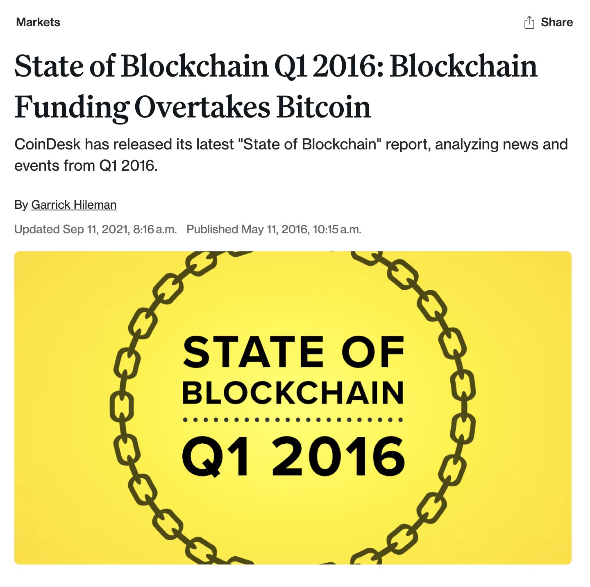
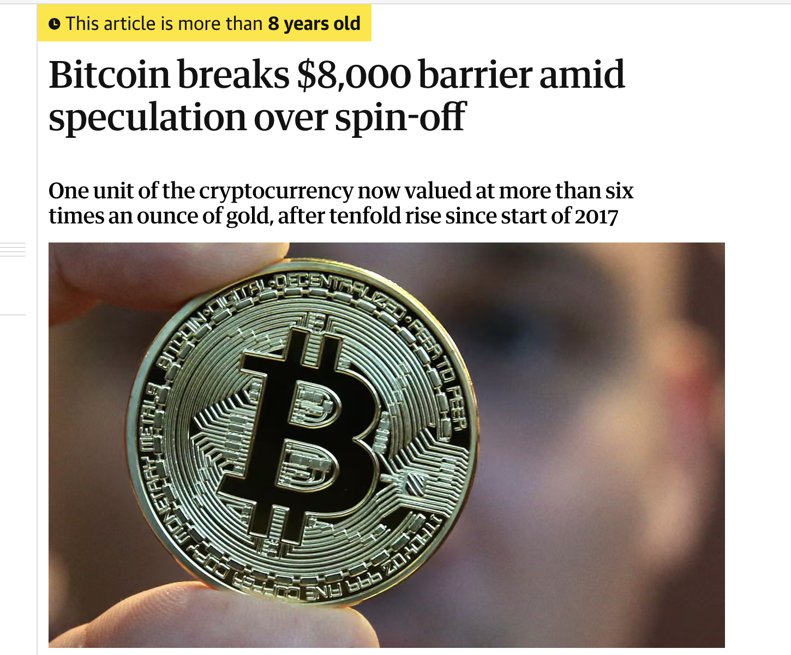
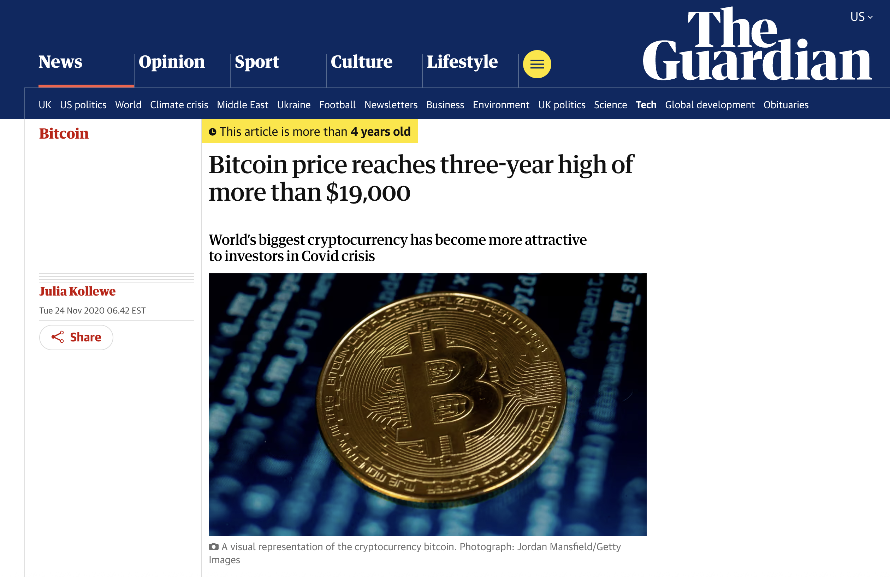
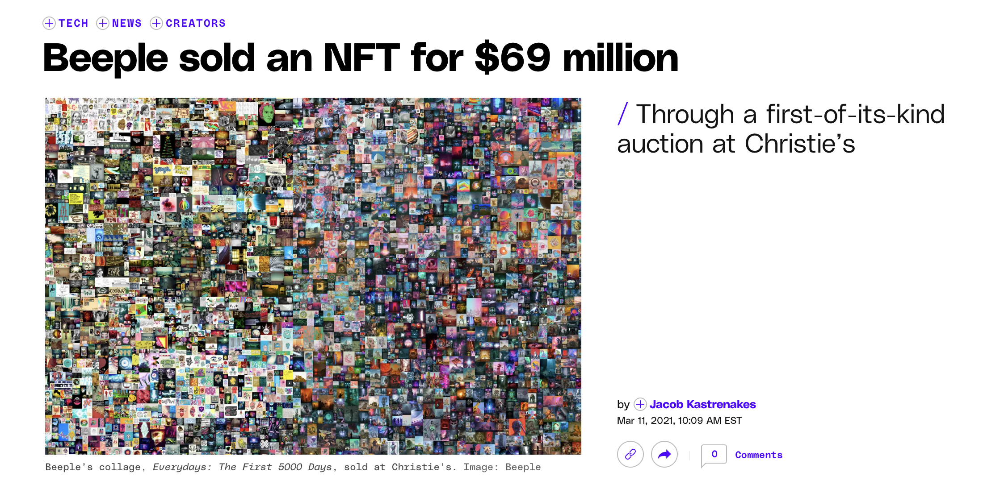
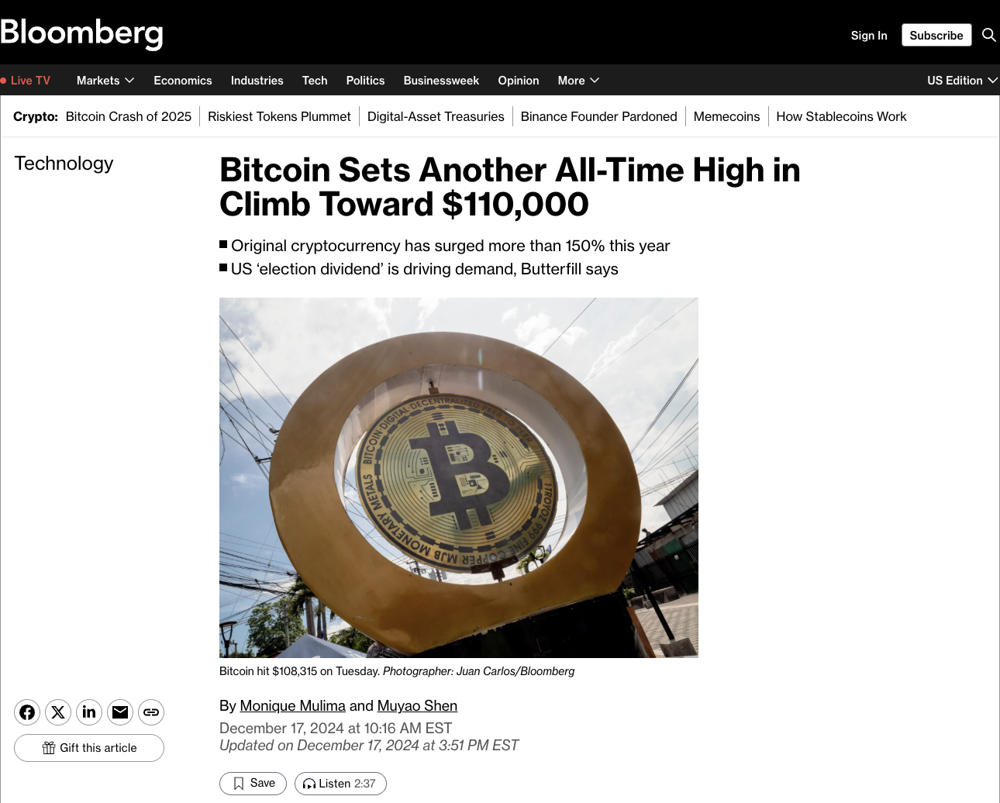

Phase 1 - Blockchain Curiosity
(2015 - 2017)
Period: Jan 2015 → Dec 2017
Dominant keyword:
“blockchain” & "bitcoin price"
Public focus: Foundational understanding of distributed ledger technology. Interest centers on learning how this new system works and why decentralization matters.
Early discussions remain mostly technical, involving concepts such as hashing, mining, consensus, and transparency.
Narrative: People explore what blockchain is and how it works; curiosity is technological rather than financial.
Bitcoin is still niche, used mainly within developer communities and early adopters. NFT is nearly invisible, and
broader cultural applications do not yet exist. Overall, this phase reflects early-stage experimentation and conceptual
learning rather than widespread adoption or investment-driven hype.
Phase 1 - Blockchain Curiosity (2015 - 2017)
2016-05-25 - Blockchain Funding Overtakes Bitcoin
blockchain startups surpassed bitcoin firms in funding for the first time,
signaling interest in broader uses like smart contracts.
Investment topped $1.1 billion as Ethereum soared,
while bitcoin remained stable and debate continued over blockchain's long-term maturity.
CoinDesk

Phase 1 - Blockchain Curiosity (2015 - 2017)
2017-11-30 - Bitcoin breaks $8,000 barrier amid speculation over spin-off
Bitcoin broke $8,000 amid speculation over a hard fork
that could grant holders new coins. Its price had jumped more
than tenfold that year, fueled by fork-related hype and growing belief that
Bitcoin could challenge traditional banking.
the Guardian

Phase 2 - Bitcoin Confidence & Market Normalization
(2019 - 2020)
Period: Jan 2019 → Dec 2020
Dominant keyword:
“bitcoin price”
Public focus: Growing trust in cryptocurrency as early doubts fade. Attention shifts from technical fundamentals to market behavior,
regulation, and the entry of institutional investors. Searches reflect increasing acceptance rather than novelty.
Narrative: Following the 2018 downturn, Bitcoin begins recovering and stabilizing. Financial institutions and large companies
start exploring crypto, signaling mainstream credibility. Public curiosity becomes investment-oriented, focusing on price cycles,
halving events, and long-term prospects. The discourse matures as Bitcoin moves from a fringe technology to a legitimate financial asset.
Phase 2 - Bitcoin Confidence & Market Normalization (2019 - 2020)
2020-12-16 - Bitcoin price reaches three-year high of more than $19,000
Bitcoin climbed above $19,000 in November 2020,
nearing its 2017 record after a sharp year of gains.
The rally was driven by pandemic-related economic uncertainty,
rising interest from institutional investors, and companies
like PayPal adopting cryptocurrency services. Despite the surge,
Bitcoin remains a highly volatile and speculative asset.
the Guardian

Phase 3 - NFT Explosion
(2021 - Mid 2022)
Period: Jan 2021 → Jun 2022
Dominant keyword:
“NFT”
Public focus: Sudden cultural mass adoption and speculative enthusiasm. NFTs become symbols of digital ownership, celebrity influence, and rapid financial gain.
Attention expands far beyond the crypto community into art, fashion, gaming, and entertainment.
Narrative: NFT searches surge to unprecedented levels as multimillion-dollar sales capture global attention. Collections like Beeple, Bored Ape Yacht Club, and
CryptoPunks dominate headlines. Public discourse shifts from blockchain mechanics to cultural value, identity, and status. This phase marks the peak of hype-driven
participation, where curiosity is fueled by profit potential and viral media exposure rather than technological depth.
Phase 3 - NFT Explosion (2021 - Mid 2022)
2021-03-11 - Beeple sold his NFT "The First 5000 Days" for $69 million
The record-smashing NFT sale comes after months of increasingly valuable auctions.
In October, Winkelmann sold his first series of NFTs,
with a pair going for $66,666.66 each. In December,
he sold a series of works for $3.5 million total.
And last month, one of the NFTs that originally sold
for $66,666.66 was resold for $6.6 million.
the Guardian


Phase 4 - Post-NFT Correction & Bitcoin Maturity
(Late 2022 - 2024)
Period: Sep 2022 → Dec 2024
Dominant keyword:
“bitcoin price” (steady baseline)
Public focus: Renewed emphasis on fundamentals and long-term value. Interest in speculative digital assets cools as market excesses unwind.
Attention returns to Bitcoin's stability, macroeconomic relevance, and institutional adoption.
Narrative: The NFT market collapses, reducing cultural noise and shifting focus back to core crypto assets. Bitcoin emerges as the dominant topic,
supported by discussions of inflation hedging, ETF approvals, and global regulatory clarity. Blockchain interest resurfaces modestly in enterprise
and infrastructure contexts, but the overall public narrative becomes more sober, data-driven, and financially grounded.
Phase 4 - Post-NFT Correction & Bitcoin Maturity (Late 2022 - 2024)
2024-12-17 - $108,268.45 The highest price for Bitcoin in 2024
Bitcoin's surge in late 2024 was largely attributed to increasing institutional
adoption and growing anticipation around regulatory clarity in major markets.
Despite the volatility, analysts noted that the December peak positioned Bitcoin
for a potentially strong trajectory heading into 2025.
bloomberg
